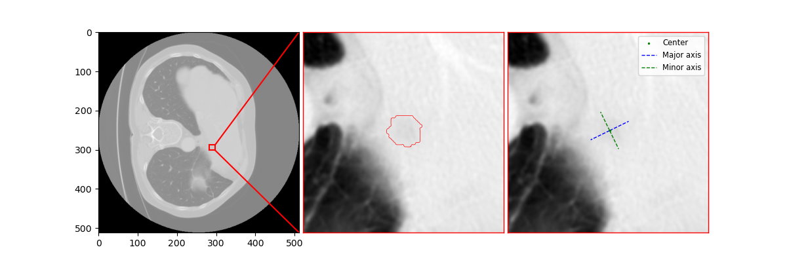

{% extends 'base.html' %}
{% block content %}

<style>
    .jsgif canvas{
        max-width: 32vw;
        max-height: 32vw;
    }
</style>

<br>
<br>
<br>
<br>

<div style="position: relative;">    
    <div class="box">
        <select id="mySelect" onchange="myFunction">
            <option value="2">Axial</option>
            <option value="1">Coronal</option>
            <option value="0">Sagittal</option>
        </select>
    </div>
</div>


<br>
<br>


<script type="text/javascript" src="./static/libgif.js"></script>
<script type="text/javascript" src="./static/rubbable.js"></script>


<script>
    var node;
    var clone;
    var sup1;
    var sup2;
    let gifWrapper,clonedGifWrapper,center;

</script>


    <div class="row">
        <div class="col">
            <center id="center">
                

                <div  style="margin-top: 5px;">
                    <a href="javascript:;" class="btn btn-dark my-1" id="pause">Pause</a> |
                    <a href="javascript:;" class="btn btn-dark my-1"id="play">Play</a> |
                    <a href="javascript:;" class="btn btn-dark my-1"id="forward">Step forward</a> |
                    <a href="javascript:;" class="btn btn-dark my-1"id="backward">Step back</a>
                </div>
                <br >
                <br >
                
            
                
                
                <div class="gif_wrapper" id="gif_wrapper" style="display:flex; margin-top:15px;">
                    
                    <div class="col" style="margin-left: 200px;" >
                        <p style="  text-align: start; color: black; margin-left:-129px">Original</p>
                        
                    </div>

                    <div class="col" style="margin-left: 200px;" >
                       <p style="text-align: start; color: black; margin-left:-129px">Liver and Lesions</p>
                       
                    </div>

                    <div class="col" style="margin-left: 200px;" >
                        <p style="  text-align: start; color: black; margin-left:-129px">Lobes</p>
                        
                    </div>
                </div>
            </center>
        </div>
    </div>

<div class="row">
    <div class="col"></div>
    <div class="col center-col" style="display: flex; align-items: center;  justify-content: center;">
        <a href="/TODO" class="btn btn-dark my-1" style=" text-align: center;" id="Modify">Modify mask</a> 
    </div>
    <div class="col"></div>

</div>

<!-- visualization start -->
<div class="row">
    <style>
        .row {
            margin-top: 50px;
        }
    </style>
    <div class="col">
    </div>
    <div class="col-8"><h1 style="font-size: 35px; text-align: center;">Tumors Visualization</h1></div>
    <div class="col"></div>
</div>


<script>
    function myFunc(vars) {
        return vars}
</script>

<div class="container p-5">
    <div class="p-3">
        <center>
    
          <div class="row" style="margin-left: 10%;">
            
            <div class="col" style="display: flex;">
                <label style="color: rgb(0, 0, 0); font: 1em sans-serif; font-size:20px; font-weight:bold; margin-right:5px;" for="Shape">Mood: 
                </label>
                <select class="form-select" aria-label="Default select example" id="Shape" onchange="displayLesion()" style="max-width: 60%;">
                    <option value="1">contour</option>
                    <option value="2">box</option>
                    <option value="3" selected>zooming</option>
                </select>
            </div>
            <div class="col" style="display: flex;">
                <label style="color: rgb(0, 0, 0); font: 1em sans-serif; font-size:20px; font-weight:bold; margin-right:5px;" for="lesions">Tumor:
                </label> 
                <select class="form-select" aria-label="Default select example" id="lesions" onchange="displayLesion()" style="max-width: 60%;">
                </select>
            </div>
          </div>
     
      </center>
    </div>
    <div class="row">
        <div class="gif_wrapper" id="gif_wrapper" style="width: 800px; display: flex; margin-top: 15px;">
            
        </div>     
    </div>
    <div class="row">
        <div class="col"></div>
        <div class="col-8">
            <br>
            <a class="btn btn-dark my-1 w-100" href="/report" id="dark1" style="font-weight:600;">Generate Report</a>
        </div>
        <div class="col"></div>
    </div>
</div>

<script type="text/javascript">
    
    myVar = myFunc({{data|tojson}});
    console.log(myVar['Data'].length) ;
    function codeAddress() {
       
        let i = 1;
        let len = myVar['Data'].length;
        console.log(myVar);
        let text = "";

        for (; i < len+1; i++) {
            var y = document.getElementById("lesions");
            var option = document.createElement("option");
            option.text = "Lesion #"+i;
            val = i;
            option.value = val.toString();
            y.add(option);
        }
      }
    window.onload = codeAddress;


    const sb = document.getElementById('Shape');
    function displayLesion(){
        var shape = document.getElementById("Shape").value;
        var lesion = document.getElementById("lesions").value;
       // console.log(x);
        switch(shape) {
            case "1":
                index=+lesion;
                index--;

                document.getElementById("tumor_mood_image").src = "../static/contour/tumor_"+index+".png";
                document.getElementById("tumor_mood_image").style.marginLeft = "250px";
                document.getElementById("tumor_mood_image").style.height = "550px";

                break;
            case "2":
                index=+lesion;
                document.getElementById("tumor_mood_image").src = "../static/box/tumor_"+index+".png";
                document.getElementById("tumor_mood_image").style.marginLeft = "250px";
                document.getElementById("tumor_mood_image").style.height = "550px";
              break;
            case "3":
                index=+lesion;
                index--;

                document.getElementById("tumor_mood_image").src = "../static/zoom/tumor_"+index+".png";
                document.getElementById("tumor_mood_image").style.marginLeft = "-75px";
                document.getElementById("tumor_mood_image").style.height = "450px";

                break;
               break;
         
        }
        console.log("lesion #"+lesion);

    }
   
    
</script>

<script>
    gifWrapper = document.getElementById("gif_wrapper");
    center = document.getElementById("center");
    clonedGifWrapper = gifWrapper.cloneNode(true);
    sup1 = new SuperGif({ gif: document.getElementById('overlay') } );
    sup1.load();
    sup2 = new SuperGif({ gif: document.getElementById('oringinal') } );
    sup2.load();
    sup3 = new SuperGif({ gif: document.getElementById('lobes') } );
    sup3.load();
    const selectElement = document.querySelector('#mySelect');
    async function myFunction(e) {
        const choosenVal = e.target.value
        const response = await fetch(`/views?view=${choosenVal}`, {
        method: 'GET',
        headers: {'Content-Type': 'application/json'},
        });
        const data = await response.json();
        gifWrapper.remove()
        gifWrapper = clonedGifWrapper.cloneNode(true);
        center.appendChild(gifWrapper)
        const orignal_image = document.querySelector('#oringinal');
        const overlay_image = document.querySelector('#overlay');
        const lobes_image = document.querySelector('#lobes');
        orignal_image.src= data[1];
        overlay_image.src=data[0];
        lobes_image.src=data[2];
        sup1 = new SuperGif({ gif: document.getElementById('overlay') } );
        sup1.load();
        sup2 = new SuperGif({ gif: document.getElementById('oringinal') } );
        sup2.load();
        sup3 = new SuperGif({ gif: document.getElementById('lobes') } );
        sup3.load();
    }
    selectElement.addEventListener('change',myFunction );

    const pauseElement = document.querySelector('#pause');
    function pausHandler(params) {
        sup1.pause();sup2.pause(); sup3.pause(); return false; 
    }
    pauseElement.addEventListener('mousedown',pausHandler );

    const playElement = document.querySelector('#play');
    function playHandler(params) {
        sup1.play();sup2.play();sup3.play(); return false;
    }
    playElement.addEventListener('mousedown',playHandler );

    const forwardElement = document.querySelector('#forward');
    function forwardHandler(params) {
        sup1.move_relative(1);sup2.move_relative(1);sup3.move_relative(1); return false;
    }
    forwardElement.addEventListener('mousedown',forwardHandler );

    const backwardElement = document.querySelector('#backward');
    function backwardHandler(params) {
        sup1.move_relative(-1);sup2.move_relative(-1); sup3.move_relative(-1); return false;
    }
    backwardElement.addEventListener('mousedown',backwardHandler );

    

</script>


{% endblock %}

